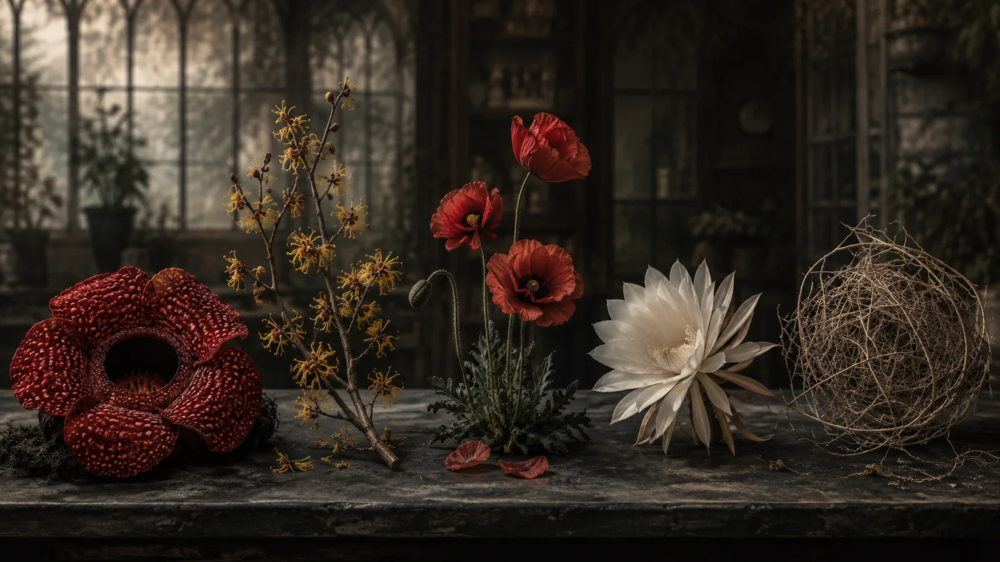
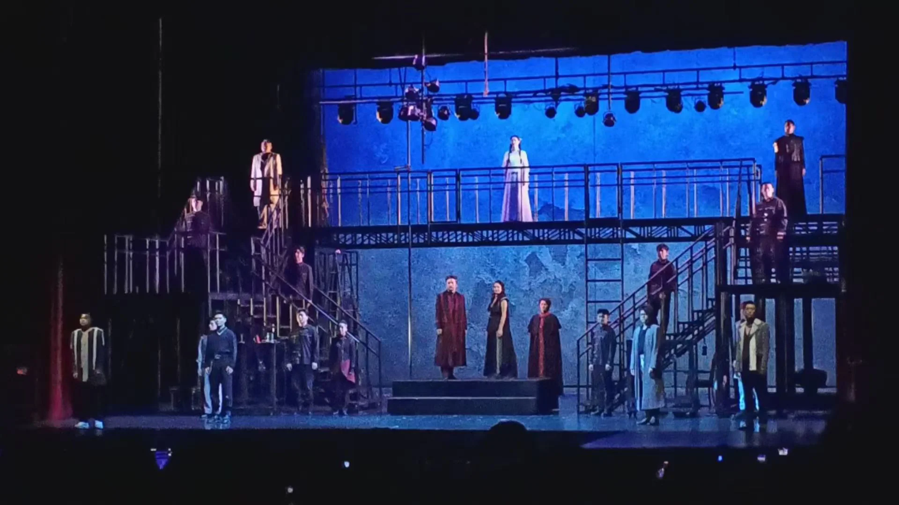
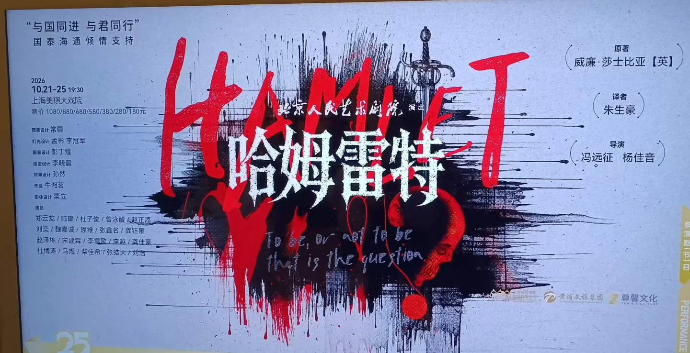
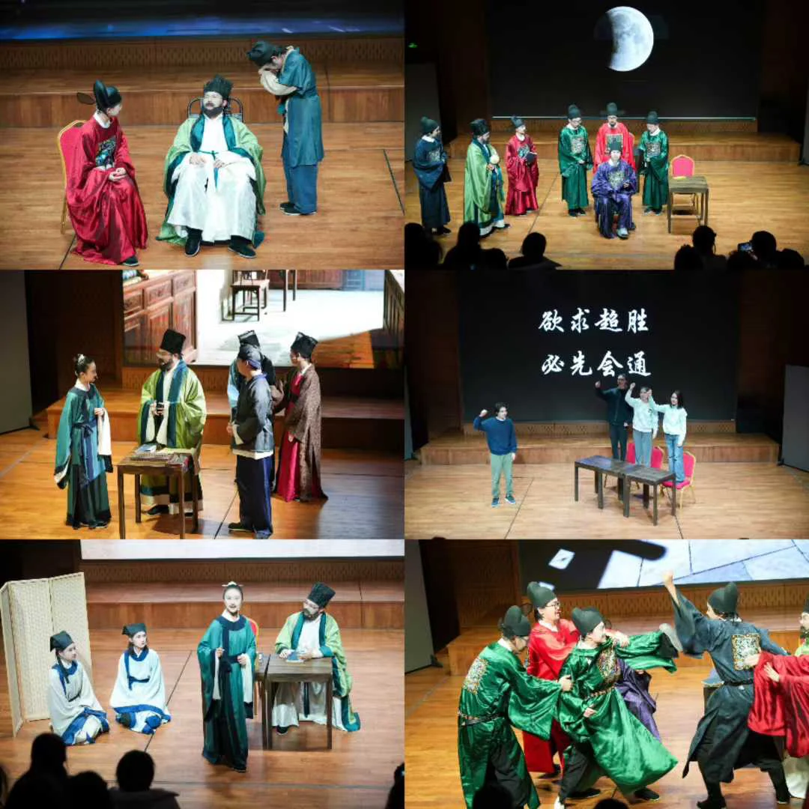

文字 · 观众席 · 舞台
笑笑的小说、诗与随笔，还有散场之后，仍想继续说的话。

作品选
最近的小说、韵文与随笔，在故事、信仰与人的经验之间来回。
韵文 · 校刊 · 2026年6月
五种违逆时令、环境或自身命运的植物：大王花、金缕梅、罂粟、昙花与风滚草。
观众席
散场后还想继续说的话，记下最近几次音乐与戏剧的回响。
话剧 · 2026年10月23日
“这个版本的结局好特别……我好喜欢这个😭”


幕后到台前 · 2025年11月18日
笑笑导演的学校原创话剧。从暑假的准备，到黑匣子剧场坐满观众的那一晚，她和同伴一起把故事搬上舞台。

关于这座档案
笑笑喜欢托尔金与莎士比亚，也喜欢坐在剧场里看一出戏。这里收录她的写作，以及音乐会与剧场带来的回响。